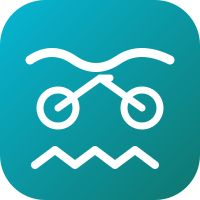
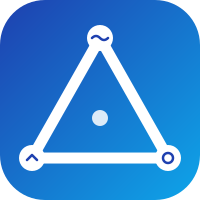
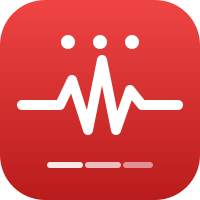

Tik op een icoon om groot te bekijken. Onder elk staat hoe het er als klein iOS-icoon uitziet.

Drie sporten gestapeld op cyaan/teal verloop. Direct herkenbaar als triatlon.

Tri-driehoek met sport-symbolen op de hoeken en AI-accent in midden. Abstract, modern.

Bold ECG-curve op rood verloop, met tri-dots en snelheidslijnen. Energiek, "AI coach" feel.